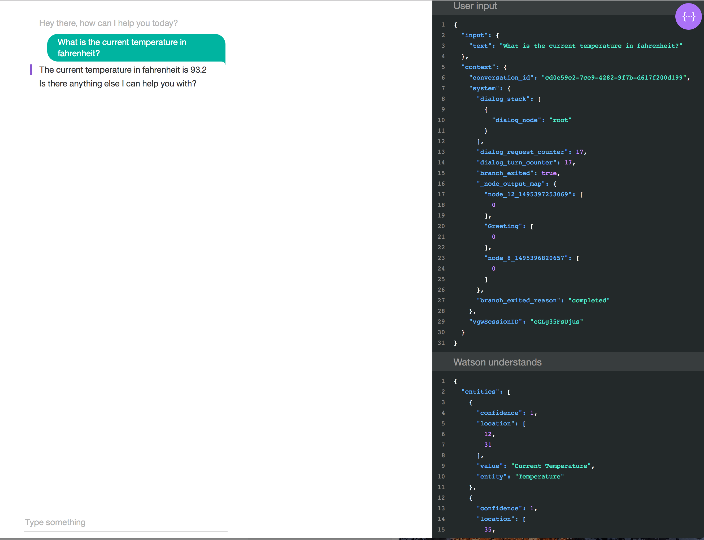

Watson Conversation Service WCS is the Watson service for enabling chat bot functionality. The chat bots that are developed in WCS are free flowing and can jump around, similar to how a conversation evolves between to humans. The interactions are like a dialog in the sense that the user asks questions in any order and answers are provided in response. In some instances the response is a clarifying questions, which requires the user to provide more information. In more complex interactions, the response to user questions and responses for clarification are user specific. Once a response needs to provide user specific information, the logic and process flow to make that determination needs to be coupled with technology that can call other services, outside of WCS, to gather that information. It is in this scenario that an orchestration application is required. This applicatin is inserted in between the client applications and the WCS service and watches for signals from WCS and takes action based on those signal. Below is an architecture view of how this works.
As you can see a user can interact with WCS from many different interfaces or modalities. For example they can use with a web client, voice client, SMS client. Regardless of which way a user will interact with WCS, they will go through an orchestration application.
The purpose of this web client is to help in the development of new applications that are designed in WCS and also make API calls other systems for personalized responses. The main feature of this web client is the JSON viewer which allows the developer or tester to see what is being sent to WCS in the JSON payload and what is coming back. This is critical for debugging applications the interact with systems or services outside of WCS. Below is an image of the web client. 
As you can see on the left side, is the chat bot client. Typical question and answer flow. On the right side is the JSON viewer. This viewer shows the JSON message being sent from the web client "User Input" and the corresponding JSON response "Watson Understands" from WCS or the orchestration application.
There are two ways you can install the web client application, local and on BlueMix.
The application has been written in python, so there are some additional packages that will need to be installed.
You need to install the following python package. Open a new command line window You can cut and paste each item below on a command line
pip install requests
pip install flask
pip install xmltodict
pip install couchdbkit
The above only take a few minutes
Once the above is installed you need to export one or more environment variables:
If your orchestration application's API needs a userid and password in order to call the API, then you need to export two more environment variables.
At the command line, you can start the application by
python webclientproxy.py
You should see the following in the console output:
2017-05-24 12:16:47,730 - INFO - starting
2017-05-24 12:16:47,931 - INFO - * Running on http://0.0.0.0:5002/ (Press CTRL+C to quit)
Now point your browser to the following URL:
At this point you should be up and running in a local environment.